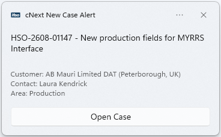
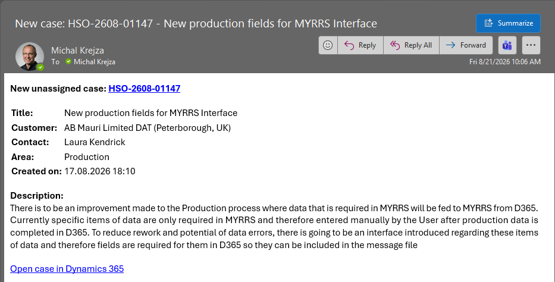

D365 Case Notification
A lightweight Windows alert that polls a Dynamics 365 Customer Engagement view for new unassigned cases and notifies you with a Windows toast notification and an Outlook email — automatically, in the background, every 10 minutes during working hours.


Prerequisites
Ensure the following are in place on the PC before running the installer.
- Windows 10 / 11 Toast notifications require an interactive Windows session.
- PowerShell 5.1+ Included by default on Windows 10 and 11.
-
MSAL.PS module
For authenticating to Dynamics 365. Install once per PC:
Install-Module MSAL.PS -Scope CurrentUser - Outlook (desktop) Must be installed and signed in. Required for email alerts only — toasts work without it.
- D365 CE access The user must have access to the configured view in Dynamics 365.
Installation
The installer sets up all files and schedules the background task. Run it once per PC.
-
1Place all files in one folder
Put the following files together in the same folder (e.g. a network share or USB drive you hand to colleagues):
CNextCaseNotificationInstall.ps1 CNextCaseNotification.ps1 CNextCaseNotificationConfig.json CNextCaseNotificationIcon.ico CNextCaseNotificationRun.vbs -
2Run the installer
Right-click
CNextCaseNotificationInstall.ps1and choose Run with PowerShell, or run from a PowerShell prompt:powershell -ExecutionPolicy Bypass -File .\CNextCaseNotificationInstall.ps1The installer will create
C:\Scripts\CaseNotification\, copy the files, and register the scheduled task. It is safe to re-run. -
3Answer the setup questions
Partway through, the installer asks you for the three per-user settings:
Configure CNext Case Notification Press Enter to accept the value shown in [brackets]. Dynamics 365 organization URL [https://yourorg.crm4.dynamics.com]: View ID (GUID from viewid= in the view URL) []: Case Areas to alert on, comma-separated (e.g. Finance, Sales). Leave blank to alert on ALL areas. Areas []:Type the value and press Enter, or just press Enter to accept the value shown in
[brackets]. Your answers are written toCNextCaseNotificationConfig.jsonautomatically — no manual editing needed. On a re-install your existing settings appear as the defaults, so you can breeze through with Enter.Enter multiple Areas separated by commas, e.g.Finance, Sales. Leave the Areas answer blank to be alerted on cases in all areas. -
4Sign in to Dynamics 365 (first run only)
The very first time the task fires, a browser window will open asking you to sign in to Dynamics 365. After that, the token is cached on disk and no further sign-in is needed.
If the task runs while no one is logged on to Windows, the first-run sign-in prompt will not appear. Log on once and let the task fire — or trigger it manually from Task Scheduler — to complete authentication. -
5Allow Outlook to send (first alert only)
On the first alert that triggers an email, Outlook may display a security dialog: "A program is trying to send an email on your behalf." Click Allow. This is a one-time Outlook setting.
C:\Scripts\CaseNotification\ — folder with all script filesTask Scheduler job "CNext Case Notification" — fires every 10 min, 08:00–17:00, Mon–Fri
Configuration
The installer already asks you for the most common settings — organization URL, view ID, and case Areas — and writes them for you, so most people never need this section. It's here for when you want to change a setting after installing, or adjust one of the options the installer doesn't prompt for (email on/off, redirect address).
All user settings live in one file — CNextCaseNotificationConfig.json inside C:\Scripts\CaseNotification\. Open it in Notepad or any editor to change them; you never have to touch the PowerShell script. It's a plain JSON file, so keep the "key": value pairs and the commas between them intact. Alternatively, just re-run the installer — it offers your current settings as defaults. Either way your settings are preserved on re-install.
A complete file looks like this:
{
"orgUrl": "https://yourorg.crm4.dynamics.com",
"viewId": "00000000-0000-0000-0000-000000000000",
"sendEmail": true,
"notifyEmailOverride": "",
"areaFilter": ["Finance", "Sales"]
}
| Setting | What it does | Default |
|---|---|---|
| orgUrl | Your Dynamics 365 organization URL. "https://yourorg.crm4.dynamics.com" | https://yourorg.crm4.dynamics.com |
| viewId | GUID of the personal view to poll. See Changing the view below. "00000000-0000-0000-0000-000000000000" | Unpicked cases view |
| sendEmail | Set to false to disable email alerts and use toast-only notifications. |
true |
| notifyEmailOverride | Leave empty ("") to send alerts to your own mailbox (auto-detected). Set an address here to redirect to a shared mailbox or another recipient.
"support@yourorg.com"
|
"" (auto) |
| areaFilter | List of case Area names to alert on. See Filtering by area below. ["Finance", "Sales"] | [] (all areas) |
Changing the view
The script polls whichever Dynamics 365 view the viewId setting points to. To point it at a different view:
- Open the view in Dynamics 365 in your browser.
- Copy the GUID from the URL — it is the value after
viewid=. - Paste it as the value of
viewIdinCNextCaseNotificationConfig.json.
Filtering by area
By default you are alerted on every new case in the view, regardless of its Area. To be alerted only on specific areas (for example Finance or Sales), edit the separate settings file CNextCaseNotificationConfig.json in C:\Scripts\CaseNotification\. This file is per-user and is not overwritten when the installer is re-run.
List the Area names you want in the areaFilter array — for example:
{
"areaFilter": ["Finance", "Sales"]
}
- Names must match the case Area exactly as it appears in Dynamics 365 (matching is case-insensitive, so
financealso matchesFinance). - Leave the list empty —
"areaFilter": []— to be alerted on all areas (the default). - If you later add an area to the list, cases previously skipped for that area will be alerted on the next run.
Email settings
Email is sent through the Outlook desktop app via COM automation — no credentials are stored anywhere. The recipient is detected at runtime from your signed-in Outlook profile, so the same script file can be handed to any colleague without editing. The detection order is:
- Outlook's Exchange primary SMTP address (the actual mailbox mail is sent from).
- The SMTP address of the first configured Outlook account.
- The UPN of the account used to sign in to Dynamics 365.
How It Works
Each run of the script follows the same sequence:
A file named CNextCaseNotificationSeen.json is maintained alongside the script in C:\Scripts\CaseNotification\. It records the IDs of every case that has already been notified. Only cases that appear in the view and are absent from that file trigger a notification. This means a case will only generate one notification, even across many poll cycles.
The task runs the VBS launcher (CNextCaseNotificationRun.vbs), which in turn starts PowerShell in a hidden window — so no console window ever flashes on screen.
Troubleshooting
viewId may point to a personal view owned by a different user. Confirm the view ID in CNextCaseNotificationConfig.json matches a view accessible to your account, or ask an administrator to create a shared system view.CNextCaseNotificationConfig.json untouched if it already exists. Edit that file in C:\Scripts\CaseNotification\ directly to change settings — your changes are preserved across task runs and re-installs.